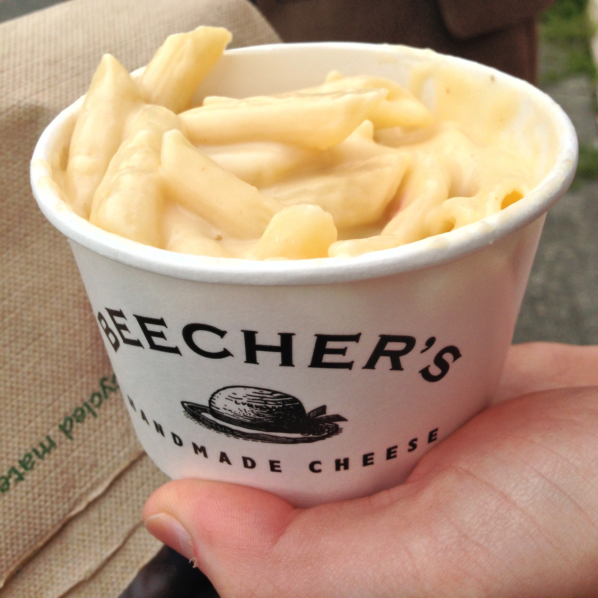
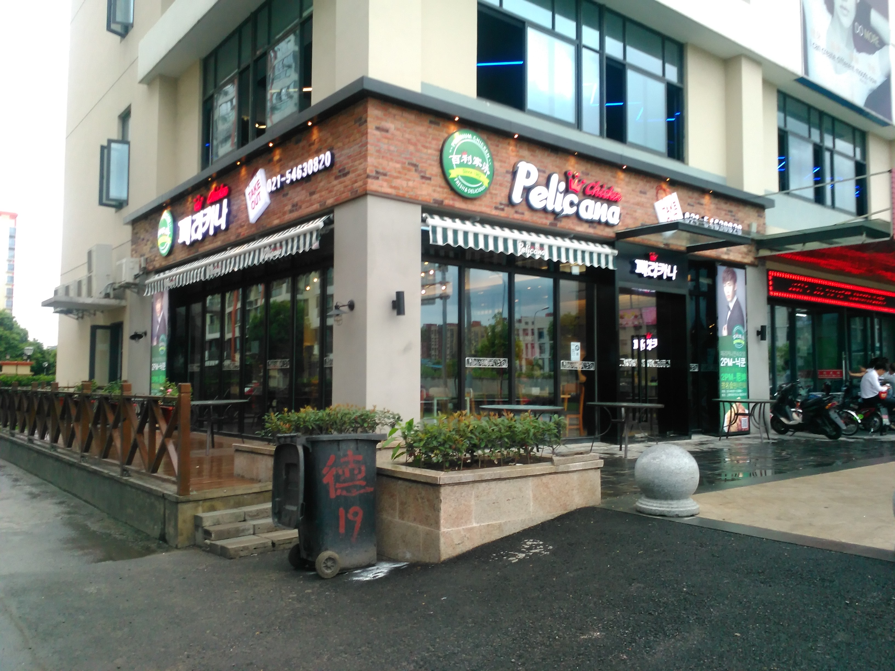
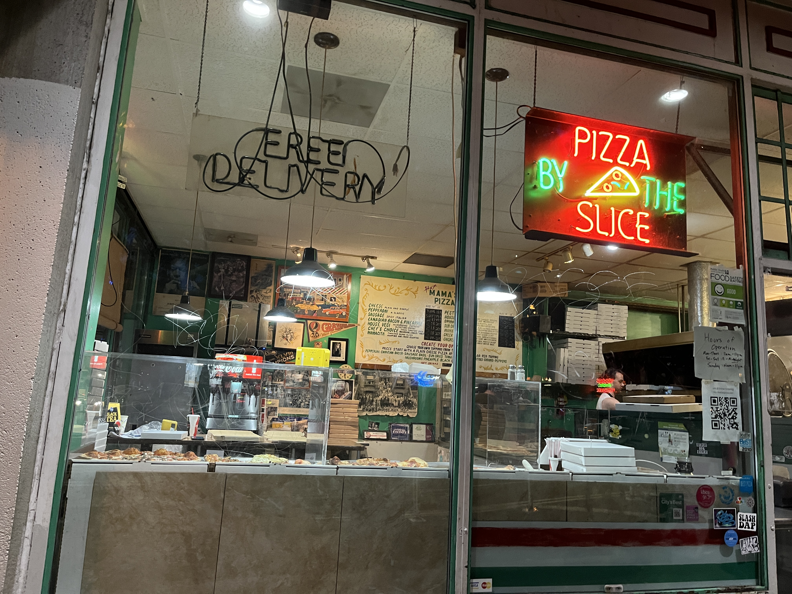
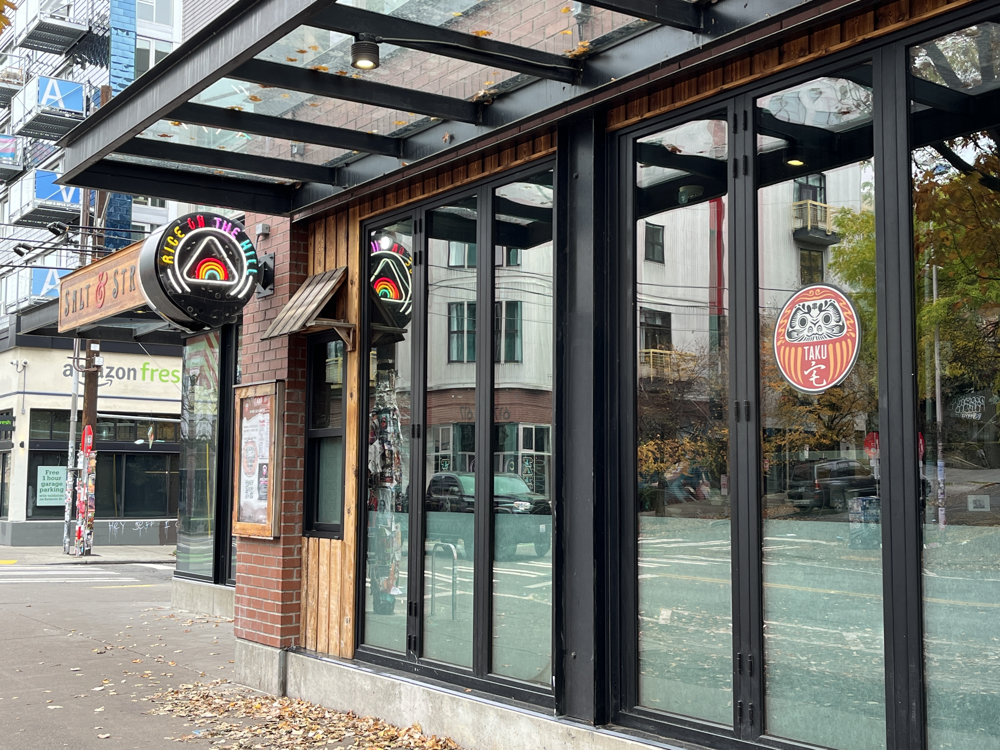

Someone once told me that they love Seattle because we've got just about everything here. The city, the beach, the ocean, the mountains, the forests, etc. They also mentioned that this is one of the few areas in the US where you can go to the beach in the summer, then go snowboarding in the winter.
See, they make some very good points that I do agree with. But I've gotta be honest. For me, it's the food. It always has been, and it always will be. So that's why I put together this list of my top 5 favorite restaurants in Seattle. Those count as tourist attractions, right?
Disclaimer: This will be in no particular order because I love all of these spots in their own ways. I'm not gonna say any of them are better than another. They're different. It just depends what you're craving at the time.
#1 Beecher's
I'm just gonna get this one out the way first because we all knew it was coming. Beecher's is one of Seattle's most iconic restaurants, and foor good reason.
#2 Pelicana Chicken
Pelicana Chicken is a Korean fried chicken chain based in Gyeryong, South Chungcheong Province, South Korea. They recently opened a location rigght here in Seattle. If you want an authentic Korean fried chicken experience without having to fly to Korea, this is about as close as it gets.
#3 Hot Mama's Pizza
Hot Mama's Pizza is another local favorite which just so happens to be down the street from Pelicana. How convenient.
#4 Taku
Taku's a great spot to grab a drink and a big giant bucket of chicken.
#5 Salt and Straw

Taku's a great spot to grab a drink and a big giant bucket of chicken.
Fun facts aboout the city:
All of the restaurants listed above are actually within 15m of each other.
Resources
Images:
- Beecher's 'World's Best' Mac and Cheese, by Adam Barhan, taken in 2013 Source.
- Pelicana Chicken Shanghai, by WhisperToMe, taken in 2014 Source.
- Hot Mama's Pizza, Seattle, by Another Believer, taken in 2022 Source.
- Seattle, by Another Believer, taken in 2023 Source.
- Seattle, by Another Believer, taken in 2023 Source.
_-_4.jpg){kind=link}